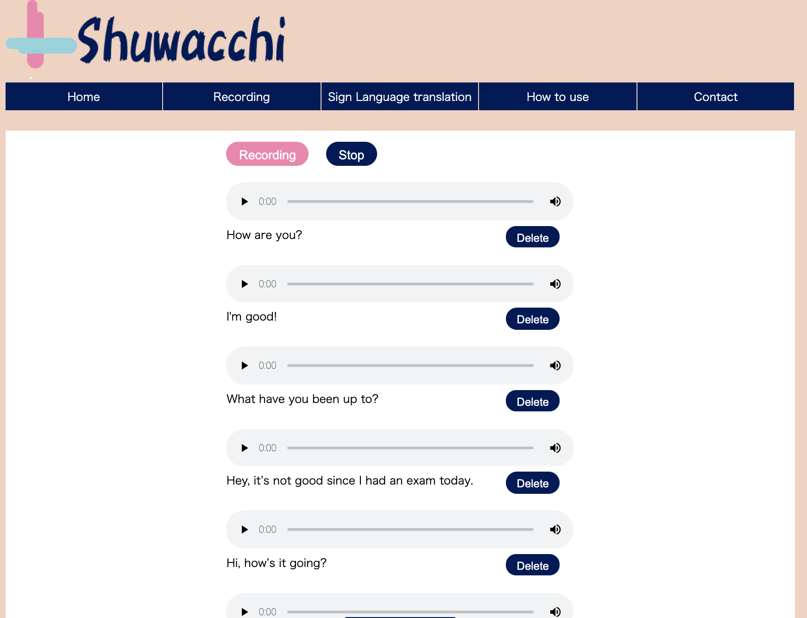
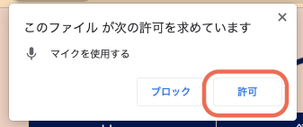
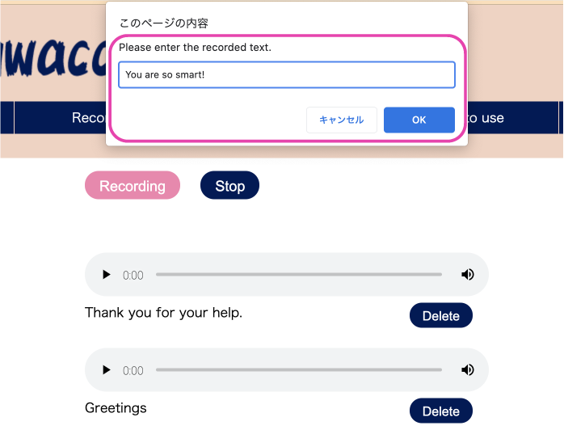
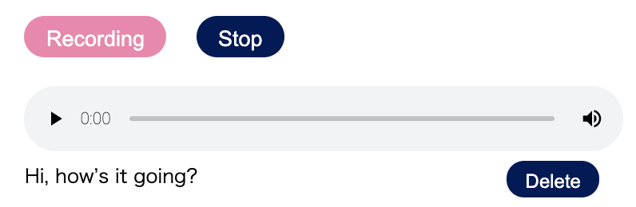

録音の使い方
人前で話をすることができない人が自分の声で話をできるように作った機能です。
家で録音した声を学校などで再生して使います。

1.最初に
ページを開くと、マイクを使ってもいいかどうか尋ねます。"はい"を選んでください。

2.録音の仕方
左側の赤い"録音"ボタンを押して、自分が使いたい文章やあいさつを録音します。
録音が終わったら"停止"ボタンを押して録音を止めます。
録音した文章やあいさつを入力してください。

3.再生の仕方
再生したい文章の上の▶︎ボタンを押すと録音した文章やあいさつが再生されます。
右下の"消去"ボタンで録音した文章を消すこともできます。
